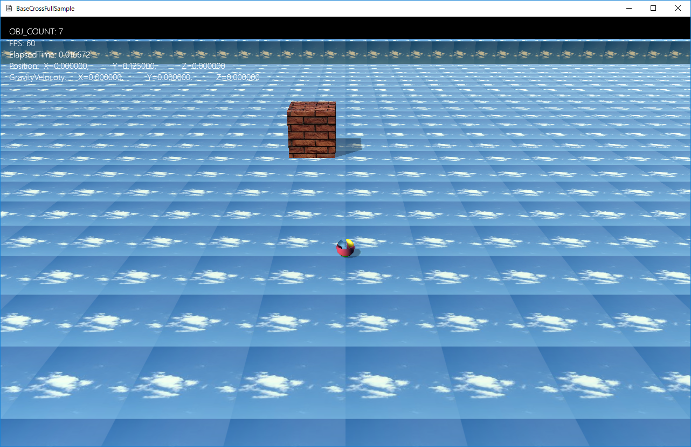
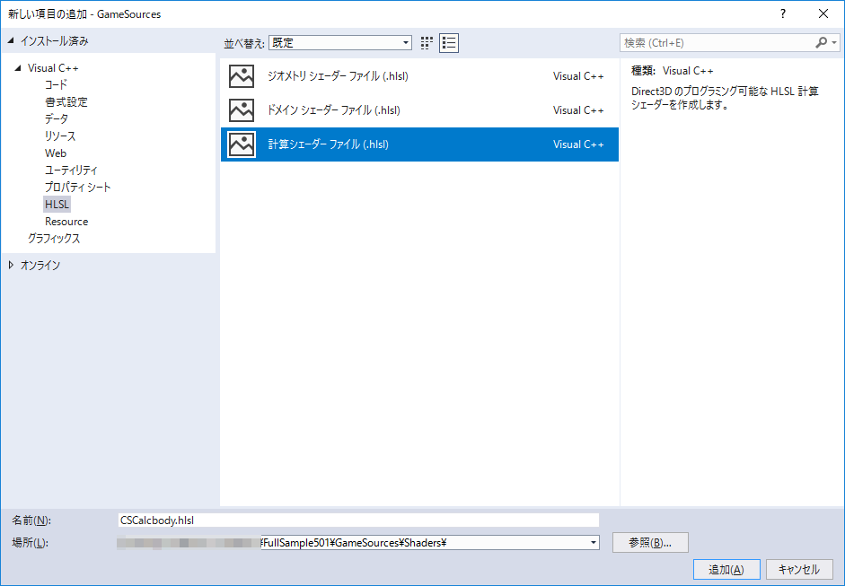

図1501a

図1501b
AbstractFactoryというパターンはFactory（いわゆる工場）クラスを選択することで、別のオブジェクトの組み合わせを作成するパターンです。
//--------------------------------------------------------------------------------------
// 親ファクトリー
//--------------------------------------------------------------------------------------
class AbstractFactory : public GameObject {
protected:
//構築と破棄
AbstractFactory(const shared_ptr<Stage>& StagePtr)
:GameObject(StagePtr) {}
virtual ~AbstractFactory() {}
//ビューの作成
void CreateViewLight();
//プレイヤーの作成
void CreatePlayer();
};
//--------------------------------------------------------------------------------------
// ファクトリー1
//--------------------------------------------------------------------------------------
class Factory1 : public AbstractFactory {
public:
//構築と破棄
Factory1(const shared_ptr<Stage>& StagePtr) :
AbstractFactory(StagePtr)
{}
virtual ~Factory1() {}
//初期化
virtual void OnCreate() override;
};
void Factory1::OnCreate() {
//ビューとライトの作成
CreateViewLight();
//配列の初期化
vector< vector<Vec3> > vecBox = {
{
Vec3(50.0f, 1.0f, 50.0f),
Vec3(0.0f, 0.0f, 0.0f),
Vec3(0.0f, -0.5f, 0.0f)
},
};
//ボックスの作成
for (auto v : vecBox) {
GetStage()->AddGameObject<FixedBox>(v[0], v[1], v[2]);
}
//配列の初期化
vector< vector<Vec3> > vecSp = {
{
Vec3(0.0f, 0.0f, 0.0f),
Vec3(5.0f, 0.0f, 10.0f)
},
{
Vec3(0.0f, 0.0f, 0.0f),
Vec3(-5.0f, 0.0f, 10.0f)
},
{
Vec3(0.0f, 0.0f, 0.0f),
Vec3(5.0f, 0.0f, -10.0f)
},
{
Vec3(0.0f, 0.0f, 0.0f),
Vec3(-.0f, 0.0f, -10.0f)
},
};
//障害物球の作成
for (auto v : vecSp) {
GetStage()->AddGameObject<FixedSphere>(1.0f, v[0], v[1]);
}
//オブジェクトのグループを作成する
auto group = GetStage()->CreateSharedObjectGroup(L"ObjGroup");
//配列の初期化
vector<Vec3> vecSeek = {
{ 0, 0.125f, 10.0f },
{ 10.0f, 0.125f, 0.0f },
{ -10.0f, 0.125f, 0.0f },
{ 0, 0.125f, -10.0f },
};
//追いかけるオブジェクトの作成
for (auto v : vecSeek) {
GetStage()->AddGameObject<SeekObject>(v);
}
//配列の初期化
vector<Vec3> vecPursuit = {
{ 10.0f, 0.125f, 10.0f },
};
//追跡するオブジェクトの作成
for (auto v : vecPursuit) {
GetStage()->AddGameObject<PursuitObject>(v);
}
//プレーヤーの作成
CreatePlayer();
}
//--------------------------------------------------------------------------------------
// ゲームステージクラス実体
//--------------------------------------------------------------------------------------
void GameStage::OnCreate() {
try {
//2分の1の確率の乱数を発生
if (rand() % 2) {
AddGameObject<Factory2>();
}
else {
AddGameObject<Factory1>();
}
}
catch (...) {
throw;
}
}